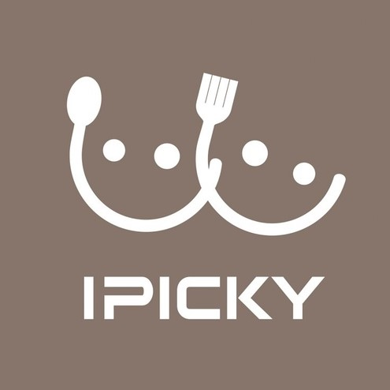

Our Partners

FoodNotes
Keep track of the food waste
A web application that will allow users to keep track of their food waste in terms of money. Users will enter their food items and checkoff the the used ones at the end of a cycle

IPICKY
Create the grouped list when buying food.
A web application that allows users to add foods that they like, dislike or allergic to on a list. With the ability to merge groups of user's list together, you can get a big complete list.